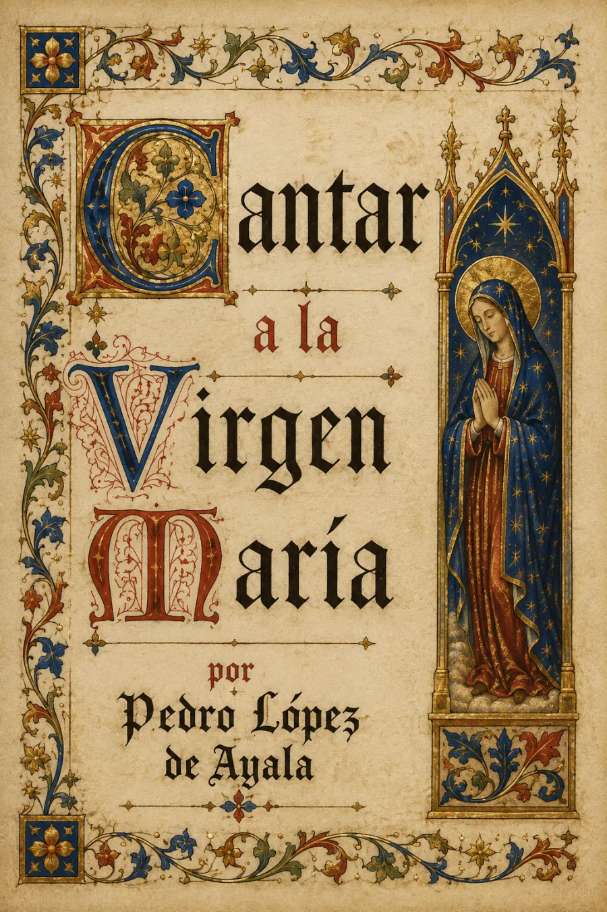

Audiolibros · Primera Ola
Pedro López de Ayala · Poesía medieval · Siglos XIV–XV
Cantar a la
Virgen María
Una luz para quien se ha perdido.
Sobre el mar de la incertidumbre,
una voz pide ser guiada.
Escuchar como quien encuentra una luz.
Grabación próximamente
Volumen

La estrella que orienta la plegaria
La voz de Ayala se dirige a María como a una luz capaz de guiar al mundo y, al mismo tiempo, a un solo ser que necesita ayuda. El canto convierte la fragilidad en una petición íntima: quien habla no presume de certeza; confía su camino a otra presencia.
La inmensidad de la imagen nace de una necesidad muy humana: no caminar a oscuras.
La estrella, el cedro, el ciprés y el olivo enlazan la invocación con una tradición bíblica de alabanza. En el universo penitencial del Rimado de Palacio, la devoción comparte espacio con el examen de conciencia y la crítica del poder. Aquí la palabra busca amparo, y el paisaje se vuelve una forma de oración.
Contexto de composición: finales del siglo XIV y comienzos del XV. No se atribuye un año de publicación preciso a este canto medieval. Texto de «Señora, estrella luciente» · Biblioteca Virtual Miguel de Cervantes. Contexto del Rimado de Palacio · RAE. La ilustración es una interpretación simbólica de la estrella del mar, no un episodio narrativo.
La lectura
Lectura completa
Grabación próximamente. La lectura de la obra estará disponible aquí. Las grabaciones se incorporarán cuando estén preparadas.
Valoración

Bueno